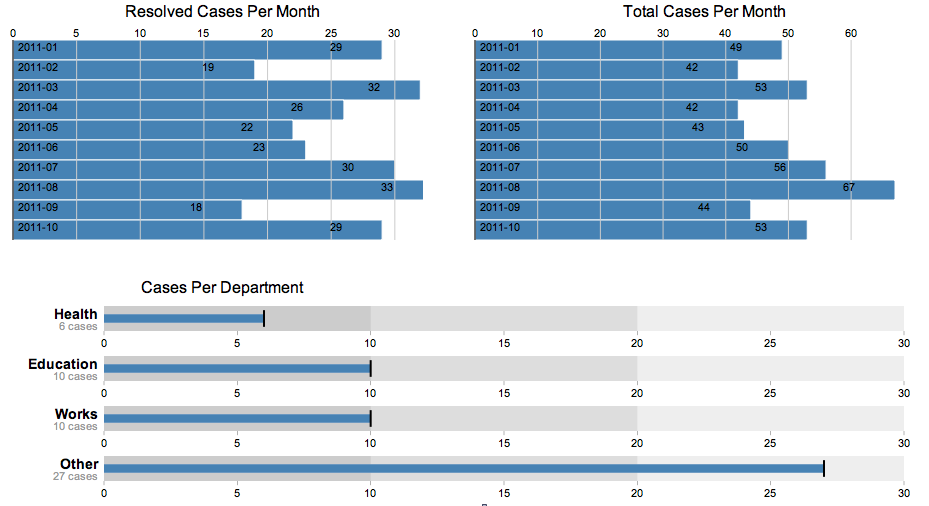

Charts in Coconut
The Coconut dashboard features charts that are rendered using the D3 javascript library.

Making sure all the data arrives when needed
The charts are activated in the home route. Coconut uses Jquery’s deferred.promise() capability to ensure that all of the data, which is assembled from asynchronous queries to CouchDB views, is available when rendering the charts.
The following sites were very helpful in explaining how to use deferreds:
A side benefit of using deferreds is that the code is alot simpler. You do not have to nest each asynchronous call.
The following code from app.js home route queries two CouchDB views and stores the data in the deferred object:
var reportEducationInstance = new ReportCollection();
reportEducationInstance.db["view"] =
["byDepartmentEducation?reduce=true&group_level=2"];
reportEducationInstance.deferred = reportEducationInstance.fetch({
success: function() {
},
error: function() {
console.log("Error loading Report: " + arguments);
}
});
var reportHealthInstance = new ReportCollection();
reportHealthInstance.db["view"] =
["byDepartmentHealth?reduce=true&group_level=2"];
reportHealthInstance.deferred = reportHealthInstance.fetch({
success: function() {
},
error: function() {
console.log("Error loading Report: " + arguments);
}
});
Data from the views is then added to the HomeView (home route in app.js):
var page = new Page({
content: "Default List of Incidents:"
});
(new HomeView(
{
model: page,
el: $("#homePageView"),
reportEducationInstance: reportEducationInstance,
reportHealthInstance: reportHealthInstance,
reportWorksInstance: reportWorksInstance,
reportOtherInstance: reportOtherInstance
}
)).render();
In the render method in HomeView.js, the jquery when() “waits” until all of those deferred fields are complete before continuing. It is executing the callback when the deferred objects are either resolved or fail.
$.when(this.options.reportEducationInstance.deferred,
this.options.reportHealthInstance.deferred,
this.options.reportWorksInstance.deferred,
this.options.reportOtherInstance.deferred)
.then(function(countData, countData2, worksData, otherData) {
var departmentReport = new Object({
date: null,
education: null,
health: null,
works: null,
other: null
});
var reportDate = new Date();
var education = parseData(reportDate, countData[0]);
departmentReport.education = education;
var health = parseData(reportDate, countData2[0]);
departmentReport.health = health;
var works = parseData(reportDate, worksData[0]);
departmentReport.works = works;
var other = parseData(reportDate, otherData[0]);
departmentReport.other = other;
bulletChart(departmentReport);
rendercharts();
})
.fail(function() {
console.log('I fire if one or more requests failed.');
});
Types of Charts
The code in this page is used to prepare the bullet chart “Cases Per Department” displayed on the lower half of the dashboard screenshot. The code in coco-charts.js has examples of two charts:
- simpleBarCharts() - Simple bar charts, based on A Bar Chart, Part 1
- bulletChart() - Bullet chart used this example, based on Bullet Charts